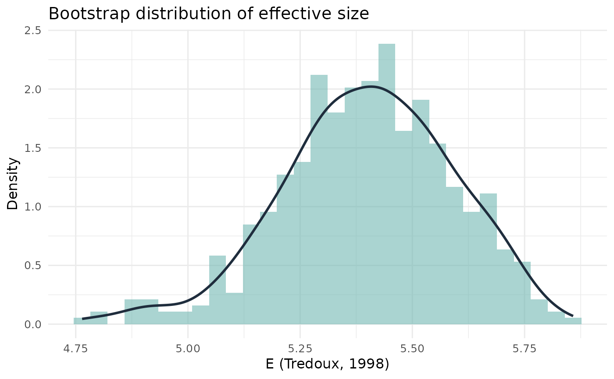

Plot Bootstrap Distribution of Effective Size
Source:R/bias_effective_distributions.R
plot_esize_distribution.RdPlot Bootstrap Distribution of Effective Size
Examples
vec <- round(runif(200, 1, 6))
dist <- esize_boot_dist(vec, k = 6, metric = "tredoux", R = 500)
plot_esize_distribution(dist, metric = "E (Tredoux, 1998)")
